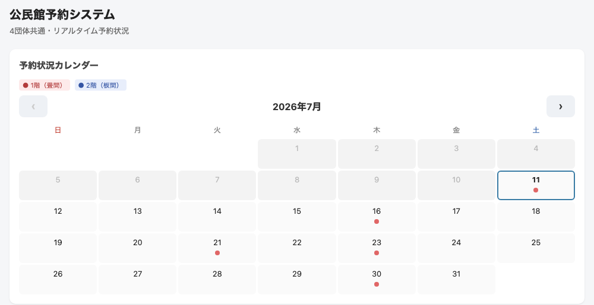
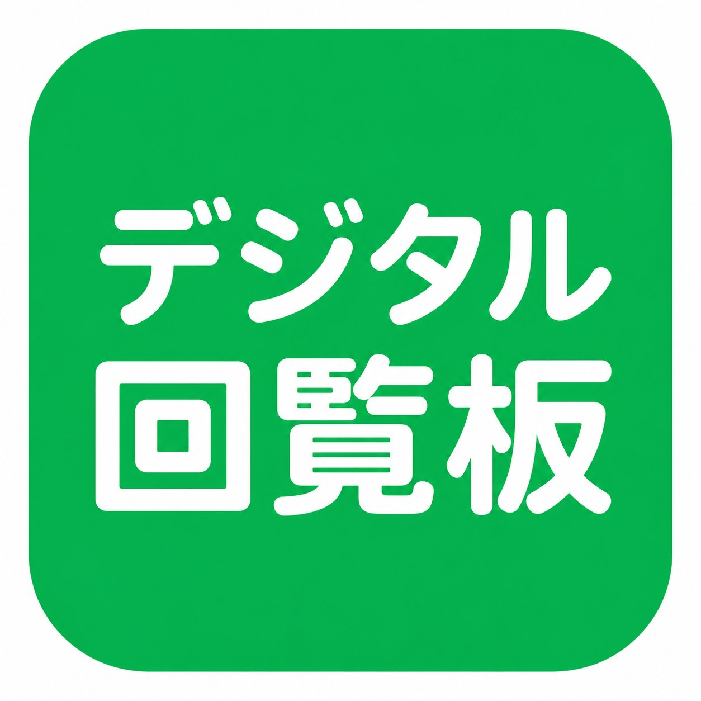
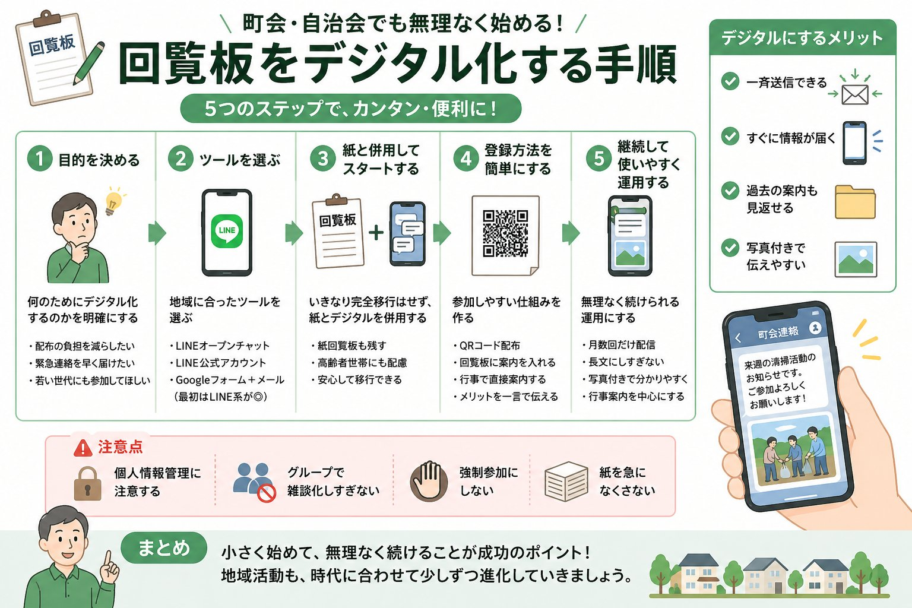
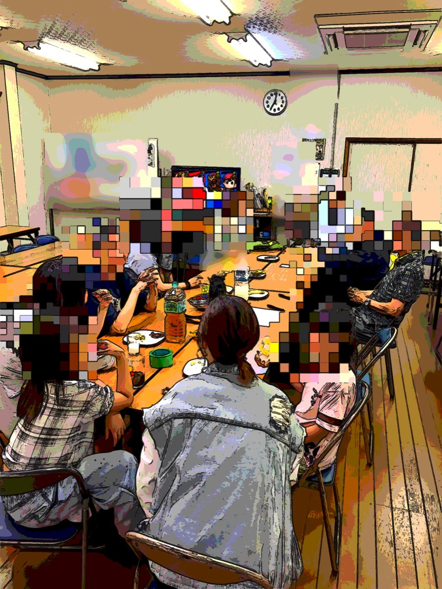
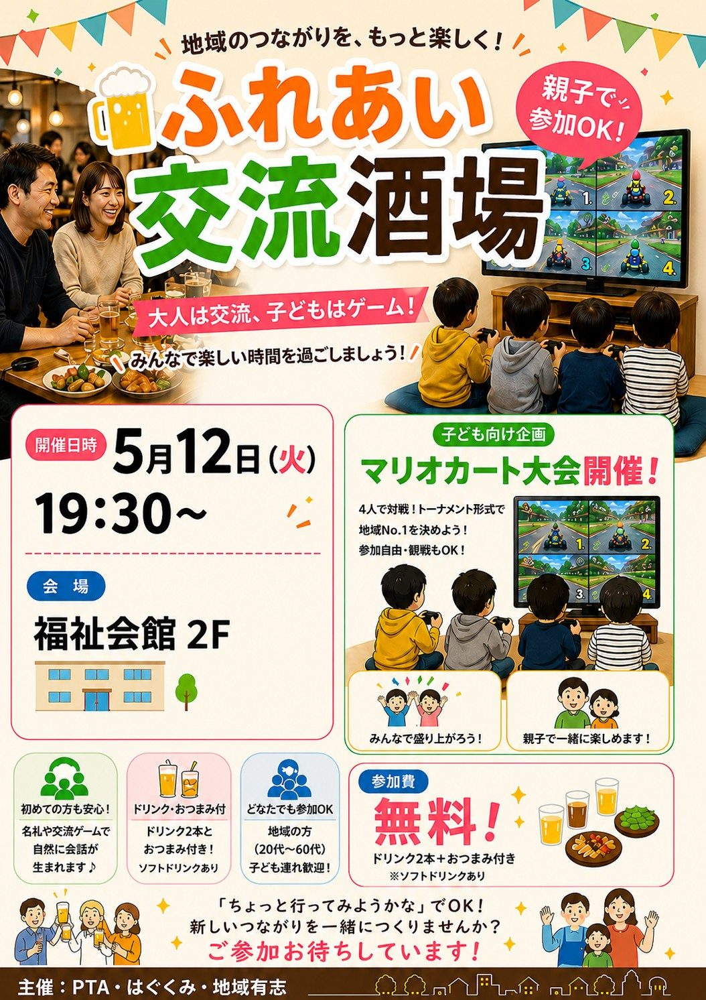
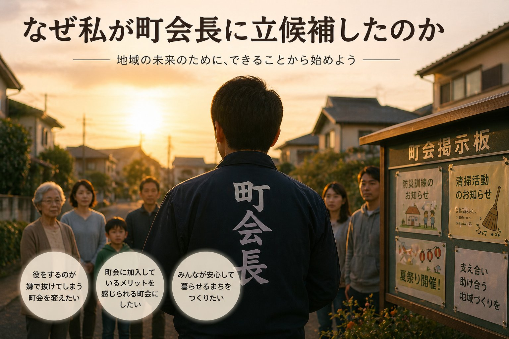

素人が作った無料ブログに、AIと相談しながら検索機能・投稿カレンダー・シェアボタンを追加し、表示速度とSEOも改善した記録。コードは書けなくても、費用0円でここまでできました。

町会運営・デジタル化4団体で共用している公民館の予約管理を、AIに相談しながらGoogleの無料の仕組みでスマホ化しました。かかった費用は0円。つまずいたポイントも正直に書きます。
初めての出店準備、LINEへの呼びかけに返信ゼロ、シフトは白紙。それでも動き続ける理由と作戦変更の話を正直に書きます。
うちの町会とお隣の町会で合同の班長会議を開きました。夏祭りの合同出店、蛍の夕べのボランティア、神社の助成金見直し、LINE活用など、話題は盛りだくさんでした。


町会・自治会の回覧板をLINEオープンチャットでデジタル化する手順を、実際の経験から解説。QRコードの作り方、全戸への案内方法、高齢者への配慮、登録者を増やすコツまでまとめた保存版です。

地域イベント5月のプレ開催を経て、名前を変えて第1回を開催。大人9名・子ども7名が参加し、アンケートでは満足の声が多数。町会未加入の方の参加もありました。次回への気づきもまとめています。
今年度2回目の班町会議を開催。神社の運営、回覧板のデジタル化、班の見直し、盆踊りの出店など、地域の課題について班長さんたちと話し合った記録です。

地域イベント「地域のつながりをもっと気軽に」をテーマに開催したプレイベントのレポート。大人約20名・子ども約10名が集まり、マリオカート大会も大盛り上がりでした。

町会運営PTA会長の経験から見えた地域の課題。「このままじゃまずい」と感じた理由と、町会長に立候補した思いを語ります。
新しいことに挑戦するまでのリアルな記録。なぜWordPressでなくGitHubを選んだのか、その理由を書きました。
メールとネット閲覧しかできなかった私が、GitHub PagesとCloudflareで無料ブログを公開するまでの手順を公開します。